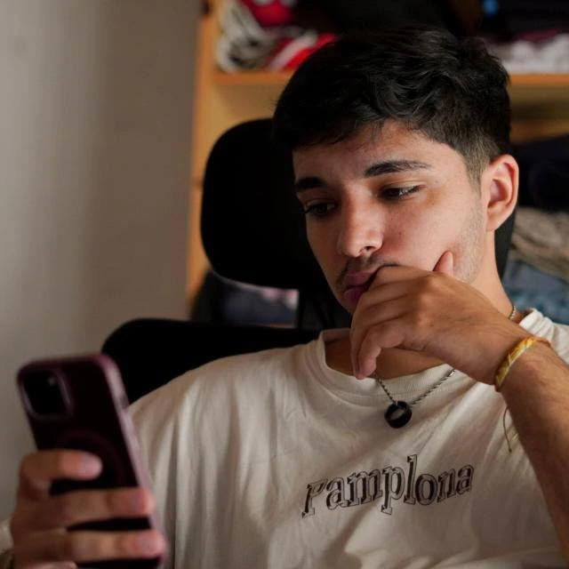

01
Editor de álbumes de fotos colaborativo para convertir recuerdos en historias extraordinarias.
Desarrollador front-end en Argentina. Combino código, diseño y creatividad
para convertir ideas propias en experiencias digitales.
Aplicaciones y experiencias digitales que transforman
ideas en productos reales.
Editor de álbumes de fotos colaborativo para convertir recuerdos en historias extraordinarias.
Una experiencia de edición fotográfica para experimentar con el color y encontrar tu propio estilo.
Edición de fotos con herramientas de máscaras, color y un flujo de trabajo pensado para la creatividad.
Un asistente de escritorio con IA local, voz y una interfaz simple y amigable.
Un dashboard de Spotify para explorar artistas, canciones y descubrir tu perfil musical.

Soy Mariano, desarrollador front-end de Buenos Aires, Argentina. Trabajo construyendo experiencias de comercio electrónico y, fuera del trabajo, desarrollo productos propios donde puedo explorar ideas, aprender y cuidar cada detalle de la experiencia.
La fotografía ocupa un lugar especial entre mis intereses, y de ahí nacen proyectos como FilmLab y MemoryBook. Con Bimu exploro otra curiosidad: cómo hacer que una herramienta tecnológica se sienta más cercana y natural.
Disfruto tanto resolver la lógica detrás de una funcionalidad como ajustar una interacción hasta que se sienta bien. Mis proyectos son ese espacio donde el código, el diseño y mis intereses se encuentran.
Mientras haya algo por descubrir,
habrá algo que nos haga sentir vivos.
Si tenés un proyecto en mente, una propuesta o simplemente ganas de conectar, escribime.